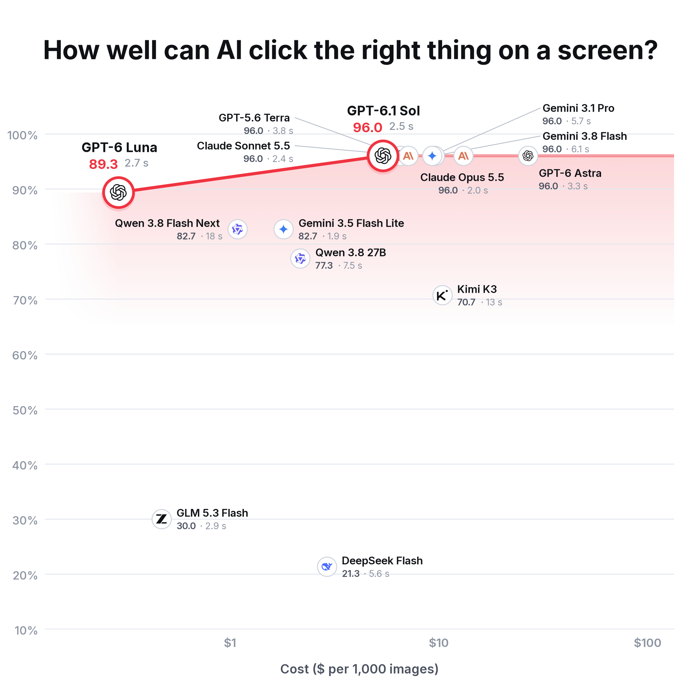

Screen-clicking benchmark, first round · five screenshots, one instruction each (collapse a conversation group, reply to a post, close a photo viewer, add a page to favorites, tick the lamb products) · language models: one plain prompt, never tuned, 3 tries, medium thinking · score = clicks on the right control (F1) out of 100 · seconds = median per question.
Answer key checked by a person (Lilly, 2026-10-10): each control's clickable area, drawn by hand. “Lamb-only” excludes the bundle filed under Lamb.

14 language models, each tested on all five screenshots. The local pointing models are queued for when GPU 0 is free.
Source and limits
Drawn by scripts/draw_charts.py --style editorial; regenerate with python3 scripts/plot_screens.py results/run-screens-1.jsonl annotations/screens/key.json screens-1. Tasks and prompt: segbench/screens.py.
Scored apart from the photo benchmark. Five screenshots cannot support broad claims. Language-model seconds include the internet and the provider’s queue.